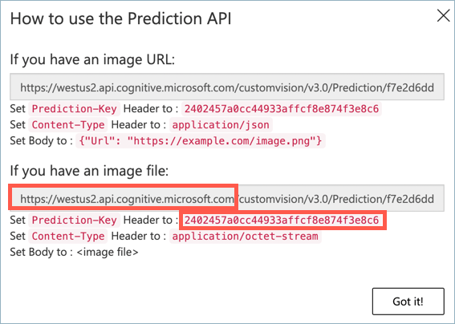
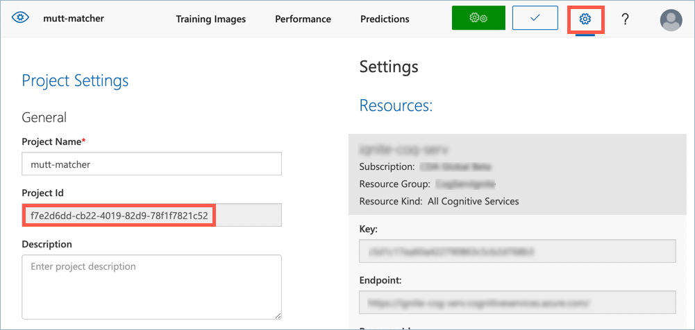

Goal 1: Build your no/low-code back end¶
The Mutt Matcher needs to connect to your image classifier and classify an image, returning the result. To do this your team will need to build a no/low-code back end flow that is passed an image, sends it to the image classifier, and returns the top prediction.
The goal of this section is create a Power Automate flow to classify an image.
The no/low-code Service¶

Microsoft Power Automate is a tool for building automated processes using flow-chart style no/low-code development. You start by defining triggers that are run when events happen, such as when a Power Apps mobile app button is tapped, an email is received, a form is submitted, or at a certain time each day. You then define a flow of events that happen using logic blocks, or connectors to services such as Custom Vision, databases, IoT platforms, or productivity applications.

For this workshop, you will need a Power Automate flow that is called by a Power Apps mobile app button. This will be passed an image from the mobile devices camera. This image will then be passed to the Custom Vision connector to classify an image. After the image is classified, the tag with the highest probability will be returned.
Success criteria¶
Your team will work together to create the Power Automate flow. Your team will have achieved this goal when the following success criteria is met:
-
Your flow takes an image passed from Power Apps.
-
Your flow is connected to Custom Vision using your image classifier, and passes the image from Power Apps converted to binary data.
-
You have parsed the output from Custom Vision and returned the first prediction (the predictions are always returned in order of most probable to least probable).
Resources¶
Your team might find these resources helpful:
Tips¶
-
Use the Power Apps button template to get started
-
When you use the Custom Vision connector, you will need to provide the following pieces of information:
-
Prediction key
-
Prediction root URL
-
Project ID
-
Published iteration name
-
Image content
The Prediction Key and Prediction URL come from the Prediction URL dialog. For the URL, you just need the root part, ending in microsoft.com or azure.com depending on the resource used when it was created.

In the dialog above, the root URL is https://westus2.api.cognitive.microsoft.com.
The Project ID comes from the Project Settings for your Custom Vision project, available from the cog button.

The Published iteration name is the name you used when you published the iteration.
-
To pass the Image content, you will need to create Dynamic content that can be passed from the Power Apps mobile app. Images from the Power Apps mobile app camera are base64 encoded. Base64 encoding is a way to convert binary data into text that can be passed around applications. Before these images can be passed to Custom Vision, they need to be converted back to binary data. To do this:
-
Select the Image Content field, then select Add dynamic content
-
In the Dynamic content tab, select Ask in PowerApps. This will create a variable for the data passed in from the Power Apps, and it will default to something like
Classifyanimage(v2)_ImageContent. The Image content will be set to this value. -
This value cannot be used directly, it needs to be converted from a base64 encoded string to binary data using the
dataUriToBinaryfunction. Close the Dynamic content popup by selecting outside it, then select theClassifyanimage(v2)_ImageContentvalue inside the Image content box to allow you to edit this value. -
Select the Expression tab, then type
dataUriToBinary, then select the function of that name that appears as you type, adding an open parentheses after the function name. -
Select the Dynamic content tab, then select the
Classifyanimage(v2)_ImageContentvariable to pass this to thedataUriToBinaryfunction. The final expression should read:dataUriToBinary(triggerBody()['Classifyanimage(V2)_ImageContent']) -
Select the OK button to update the value.
-
-
The easiest way to handle the output of the Custom Vision connector is to use a Parse JSON action. The schema to use is:
{ "type": "array", "items": { "type": "object", "properties": { "probability": { "type": "number" }, "tagId": { "type": "string" }, "tagName": { "type": "string" } }, "required": [ "probability", "tagId", "tagName" ] } }This will convert the output of the Custom Vision connector to an array of objects. Pass the Predictions from the Custom Vision connector as the Content.
-
The predictions returned by Custom Vision are always returned in order of most probable to least probable, so you only need to return the first one. You can get this using the
firstfunction, passing in the array output from the Parse JSON action. The tag will be thetagNameproperty on the first item in the array. -
To return a value, you need to use the Respond to a PowerApp or flow action. Respond with text, passing the first prediction’s
tagNamein a text field calledbreed. -
So body(“Parse_JSON”) takes the result JSON as a dynamic object, which contains an array of predictions. The first() part gets the first item from this array, and the .tagName extracts the tag name field from that array item
tagname= customvision.ai tag name of the image and tag =breedof dog -
Ensure you add this as Expression and not Dynamic Content
Final result¶
Next challenge¶
The next goal is to build your no-code mobile app.